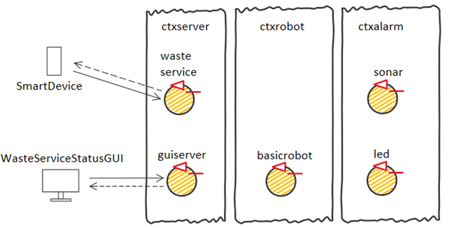
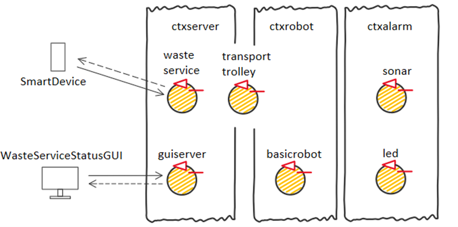

Introduction
Progetto finale di ISS, che consiste in un impianto di smistamento dei rifiuti nel quale un robot deve trasportare il materiale dal camion al relativo container
In questo sprint preliminare ci occupiamo dell'analisi dei requisiti, ossi della comprensione dei requisiti forniti dal committente e della loro formalizzazione.
Requirements
Ulteriori domande al committente:
- Può esserci solo un camion alla volta in INDOOR? SI
- Il Waste-truck deve essere liberato non appena il materiale viene scaricato? SI
- La GUI deve mostrare le coordinate del robot o basta l'area nella quale si trova attualmente? basta l'area nella quale si trova attualmente
- A cosa serve il sonar se la stanza è priva di ostacoli? Il sonar a cui si fa riferimento non è a bordo del robot, è un dispositivo esterno (così come il RPI). Se si mette una mano davanti al dispositivo, il robot si ferma. In aggiunta a questo è presente un sonar o sensore di impatto anche sul robot.
- Ci deve essere il contatto con la parete per il carico/scarico dei materiali? SI (o comunque il più vicino possibile)
- Supponiamo che il robot si stia dirigendo verso HOME (perché ha scaricato l'ultimo carico di materiale e non ci sono altri Waste truck sull'INDOOR). Se arriva un Waste truck prima che il trolley raggiunga la base, il robot deve cambiare rotta immediatamente o può raggiungere la base e poi dirigersi presso l'Indoor? CAMBIA IMMEDIATAMENTE ROTTA per dirigersi su indoor. In generale ir robot non deve "girovagare" troppo per la stanza
- È il robot a determinare quando avviene la fine di una azione di carico/scarico? In che modo tale evento può essere rilevato dal sistema da noi sviluppato? Modellare l'operazione con un SEMPLICE DELAY di durata fissa
- Il nodo sul quale la GUI va installata e un nodo fisso? O si tratta forse di palmari posseduti dai Service-manager stessi? Il NODO è FISSO
- In cosa consiste lo smart device? Quanti sono (viene usato sempre lo stesso dispositivo o ve ne è uno per ogni conducente)? Come si relaziona con il nostro sistema? Un dispositivo per ogni conducente, "alieno" invia un messaggio
- Committente ha server aziendali disponibili? È possibile usare la RPI come server (nodo sempre attivo mentre il sistema è operativo)? E' possibile usare la Raspberry, ma si può anche mettere sul PC che usiamo.
Uso del linguaggio di modellazione QAK:
In questo progetto verrà utilizzato il metamodello QAK per le seguenti ragioni:
- Parte del software già disponibile è stato sviluppato usando questo linguaggio (ad esempio unibo.basicRobot22 e unibo.sonarqak22 è sviluppato con un modello QAK)
- Definire fin da subito in maniera formale aspetti altrimenti non esprimibili con costrutti nativi di linguaggi general purpose (es: concetto di richiesta, risposta, evento)
- Flessibilità nello sviluppo e nel collocamento dei componenti dell'applicazione distribuita
- Definire modelli eseguibili e giungere ad una architettura logica di riferimento non ambigua
Documentazione QAK
Quick notesFull documentation
Requirement analysis
Dai requisiti risulta chiaro che servono almeno due nodi computazionali:
- Uno di questi è la RaspberryPi, alla quale sono collegati led e sonar.
- L'altro è a bordo del robot, siccome incaricato di inviare i segnali ad esso
Farebbe inoltre comodo avere un terzo nodo nel quale risiede il componente che riceve le richieste e coordina le attività che devono essere svolte. Dunque una prima architettura logica, nella quale per il momento vengono collocati solo i componenti di base, è la seguente:
Dizionario
Ci serviamo del dizionario come strumento per definire (e formalizzare quando possibile) i diversi termini.
Vengono segnati in viola i termini non presenti nei requisiti, ma introdotti in quanto utilizzati all'interno dei documenti prodotti
La formalizzazione avviene quando possibile con costrutti del linguaggio Kotlin, mentre quando opportuno verrà utilizzato QAK
- Waste-load:
- Termine generico per indicare il Materiale inizialmente presente sul Waste-truck
- Truckload:
- Numero di Kg di materiale del Waste-load. Formalizzazione (definito qui):
var TruckLoad : Float
- Material:
- Tipo di materiale del Waste-load, che può essere plastica o vetro. Formalizzazione con enumerativo Material.kt:
enum class Material { PLASTIC, GLASS } - depositrequest:
- Richiesta di deposito di meteriale, effettuata dal guidatore del Waste-truck tramite lo Smart device e ricevuta dal WasteService. Formalizzazione (definito qui):
Request depositrequest : depositrequest(MATERIAL, TRUCKLOAD)
- loadaccept:
- Possibile risposta data dal WasteService alla richiesta di depositrequest. Avviene quando vi è ancora posto per quel materiale nel container dedicato. Formalizzazione (definito qui):
Reply loadaccept : loadaccept(MATERIAL, TRUCKLOAD)
- loadrejected:
- Possibile risposta data dal WasteService alla richiesta di depositrequest. Avviene quando non vi è più posto per quel materiale nel container dedicato. Formalizzazione (definito qui):
Reply loadrejected : loadrejected(MATERIAL, TRUCKLOAD)
- WasteService:
- Il WasteService è il servizio che si occupa del coordinamento delle attività di raccolta e smistamento dei rifiuti. Contiene buona parte della business logic del sistema. Il componente invia comandi al Transport trolley per svolgere le azioni necessarie.
Vengono formalizzati interfaccia e comportamento mediante un attore QAK (link al file WasteServiceRequirement.qak) che riceve le depositrequest e risponde con loadaccept o loadrejected in base al carico dei Waste-truck e allo spazio ancora disponibile in PLASTICBOX o GLASSBOX.
QActor wasteservice context ctxtest{ [# var Material : ws.Material var TruckLoad : Float #] State wait initial { printCurrentMessage discardMsg Off } Transition t0 whenRequest depositrequest -> handle_req State handle_req { printCurrentMessage onMsg(depositrequest : depositrequest(MATERIAL, TRUCKLOAD)) { [# Material = ws.Material.valueOf(payloadArg(0)) TruckLoad = payloadArg(1).toFloat() #] if[# ws.func.checkdepositpossible( Material, TruckLoad ) #]{ [# ws.func.updateDeposit( Material, TruckLoad ) #] replyTo depositrequest with loadaccept : loadaccept($Material,$TruckLoad) }else{ replyTo depositrequest with loadrejected : loadrejected($Material,$TruckLoad) } } } Goto wait }
Inoltre, al fine di meglio specificare il comportamento che ci si aspetta, sono stati predisposti alcuni semplici test in TestWasteservice.ktvar truckRequestStr = "msg(depositrequest, request,python,wasteservice,depositrequest(GLASS,2),1)" var answer = connTcp.request(truckRequestStr) Assert.assertTrue(answer.contains("loadaccept")) truckRequestStr = "msg(depositrequest, request,python,wasteservice,depositrequest(GLASS,9),1)" answer = connTcp.request(truckRequestStr) Assert.assertTrue(answer.contains("loadrejected")) - Service area:
- Superfice rettangolare, piana, priva di ostacoli nella quale il robot può muoversi, e nella quale sono presenti le zone INDOOR, PLASTICBOX, GLASSBOX, HOME (corrispondenti al concetto di Position).
- Position:
- Le zone vengono rappresentate mediante l'enumerativo Position.kt:
enum class Position { INDOOR, PLASTICBOX, GLASSBOX, HOME } - INDOOR:
- Porta di ingresso adibita alla raccolta del Waste-load che dal Waste-truck viene trasferito sul Transport trolley.
Il termine viene anche usato per indicare la zona nella quale il robot deve trovarsi per effettuare l'operazione di carico - PLASTICBOX:
- Container adibito al deposito di materiale plastico, con capienza massima pari a MAXPB Kg.
Il termine viene anche usato per indicare la zona nella quale il robot deve trovarsi per effettuare l'operazione di scarico della plastica.
Formalizzazione: variabile contPB (definita qui) corrispondente alla capienza attuale, e costante MAXPB (definita qui) corrispondente alla capienza massima (entrambi in Kg).
var contPB : Float = 0F
val MAXPB : Float = 10.0F
- GLASSBOX:
- Container adibito al deposito di materiale vetroso, con capienza massima pari a MAXGB Kg.
Il termine viene anche usato per indicare la zona nella quale il robot deve trovarsi per effettuare l'operazione di scarico del vetro.
Formalizzazione: variabile contGB (definita qui) corrispondente alla capienza attuale, e costante MAXGB (definita qui) corrispondente alla capienza massima (entrambi in Kg).
var contGB : Float = 0F
val MAXGB : Float = 10.0F
- HOME:
- Area nella quale risiede il robot quando non deve svolgere alcuna attività
È inoltre l'area dove si trova inizialmente il robot. - Transport trolley:
- Rappresenta un'entità robotica generica/astratta che riceve comandi affinchè possa essere utilizzata per lo svolgimento di una Deposit action.
- DDR Robot:
- Entità robotica che riceve ed esegue comandi base di spostamento del robot:
Il committente fornisce già molto software in grado di interfacciarsi al DDR Robot concreto di WEnv: unibo.wenvUsage22, unibo.basicRobot22, unibo.boundaryQak22.
Formalizzazione: utilizzeremo l'attore QAK basicrobot presente in unibo.basicRobot22, che è in grado di interfacciarsi sia con il WEnv, che con altri robot reali.
Vengono qui brevemente illustrate le caratteristiche di basicrobot:
Possiamo comandare mosse elementari, inviando i messaggi:
//MOVE = w | a | s | d | h | l | r Dispatch cmd : cmd(MOVE)Nel caso del robot virtuale, i comandi "w" e "s" sono inviati tramite una websocket in maniera asicrona. Tali comandi sono infatti concepiti per far muovere il robot finchè non verrà rilevata una collisione con una parete.
Quando vi è una collisione viene emesso un evento del tipo:Event info : info( ARG )Gli altri comandi sono invece sincroni bloccanti, e vegnono infatti inviati tramite Http.
Grazie a questi comandi elementari, basicrobot è anche in grado di far fare degli step al robot:
Request step : step( TIME ) Reply stepdone : stepdone(V) Reply stepfail : stepfail(DURATION, CAUSE) - DDR Robot concreto o "robot":
- Con questo termine ci si riferisce al robot vero e proprio (fisico o simulato virtualmente).
Il committente fornisce già un ambiente di simulazione che implementa un DDR Robot concreto virtuale. Documentazione: WEnv, Progetto: it.unibo.virtualRobot2020. - Deposit action:
- Sequenza di azioni di:
- Raccolta di Waste-load dal Waste-truck che avviene in INDOOR (d'ora in poi con il termine Pickup ci riferiremo a questa operazione)
- Trasporto del materiale da INDOOR a PLASTICBOX o GLASSBOX in base al tipo di materiale (d'ora in poi con il termine Dropout ci riferiremo a questa operazione)
- Deposito del materiale nel PLASTICBOX o GLASSBOX in base al tipo di materiale
- Waste-truck:
- Entità che si presenta in INDOOR, e richiede lo scarico del materiale che trasporta attraverso l'uso dello Smart device
- Smart device:
- Dispositivo attraverso il quale il Waste-truck invia una depositrequest comunicando al WasteService:
- Material, ossia il tipo di materiale da depositare
- Waste-load, ossia i Kg di materiale
- Service-manager:
- Operatore umano che supervisiona lo stato dell'area di servizio usando una WasteServiceStatusGUI
- WasteServiceStatusGUI:
- Pannello di controllo che permette al Service-manager di monitorare:
- La Position del Transport trolley (non serve la posizione precisa di un sistema di coordinate)
- Il Transporttrolleystate, ossia lo stato attuale del Transport trolley. Formalizziamo lo stato con l'enumerativo Transporttrolleystate.kt:
enum class Transporttrolleystate { IDLE, MOVING, PICKINGUP, DROPPINGOUT, HALT } - Il peso corrente contPB e contGB del materiale contenuto in PLASTICBOX e in GLASSBOX
- Lo stato del LED
Nel sistema sarà necessario avere un componente che riceva tutti gli aggiornamenti relativi a questi valori. Esso provvederà (in qualche modo) ad inviare tali dati aggiornati verso l'interfaccia grafica.
Formalizziamo tale componente con il file GuiRequirement.qak - LED concreto:
- Dispositivo di output connesso al RaspberryPI (che NON è a bordo del DDR Robot)
- LED:
- Servizio rappresentante il LED concreto, che può essere impostato secondo 3 modalità:
- Led Off: quando il Transport trolley è in HOME
- Led On: quando il Transport trolley è fermo (quando distanza rilevata < DLIMIT)
- Led Blink: quando il Transport trolley è in movimento, o sta scaricando/caricando materiale
Il committente fornisce già del software per relativo al led in it.unibo.radarSystem22.domain, e in unibo.ledqak22.
Formalizzazione:
Lo stato del led viene rappresentato mediante l'enumerativo LedState.ktenum class LedState { ON, OFF, BLINK }Il servizio offerto dal led viene esplicitato mediante un attore QAK: LedRequirement.qak. Esso viene comandato per mezzo di eventi:
Event update_led : update_led(LEDSTATE)
Per specificare in maniera più formale il comportamento del LED, è stata scritta la classe di test TestLed.kt (non eseguibile in questo sprint).
- Sonar concreto:
- Dispositivo di input connesso al RaspberryPI (che NON è a bordo del DDR Robot)
- Sonar:
- Entità che rappresenta il sonar concreto.
Il committente fornisce già del software relativo al sonar in unibo.basicrobot22, it.unibo.radarSystem22.domain, unibo.sonarqak22.
Formalizzazione: consideriamo l'attore QAK sonarqak22 del progetto unibo.sonarqak22. Tale attore emette eventi in base alla distanza rilevata da sonar reale o simulato:
Dispatch sonaractivate : info(ARG) Dispatch sonardeactivate : info(ARG) Event sonar : distance( V )
I comandi sonaractivate e sonardeactivate servono rispettivamente per attivare e disattivare il sonar, mentre l'evento sonar viene emesso o da sonarsimulator, o da sonardatasource e inviato al prossimo attore della pipe. La pipe può essere configurata nel seguente modo:
if( simulate ) firstActorInPipe = sysUtil.getActor("sonarsimulator")!! //generates simulated data else firstActorInPipe = sysUtil.getActor("sonardatasource")!! //generates REAL data firstActorInPipe. subscribeLocalActor("datacleaner"). //removes 'wrong' data'' //subscribeLocalActor("datalogger"). //logs (shows) the data generated by the sonar //subscribeLocalActor("sonar"). //handles sonarrobot but does not propagate ... //subscribeLocalActor("distancefilter"). //propagates the lcoal stream event obstacle subscribeLocalActor(sonarActorName)In particolare l'attore distancefilter si occupa di filtrare e inviare al prossimo attore solo eventi di tipo obstacle:obstacle(distance) solo nel caso in cui la distanza rilevata sia minore di una distanza prefissata:

- DLIMT:
- Misura in CM della distanza limite. Se la distanza attualmente misurata dal Sonar concreto è ≤ DLIMT, il robot deve essere fermato. Quando la distanza misurata è > DLIMIT il robot può muoversi.
Formalizzazione: definiamo la costante DLIMIT (definita qui):
val DLIMIT : Float
Più precisamente, quello che ci si aspetta quando la distanza diventa ≤ DLIMT, è che:
- Se il robot sta andando avanti esso si ferma. Riprenderà ad andare in avanti una volta che la distanza torna > DLIMIT
- Se il robot sta facendo qualche altra operazione (come una Pickup o si sta girando), l'operazione comunque termina. Una volta terminata si rimane fermi finchè la distanza non ridiventa > DLIMIT
Parte di questo comportamento è descritto in maniera più formale nella classe di test Testhalt.kt (non eseguibile in questo sprint).
Riassunto situazione attuale:
Architettura logica:
N.B: Rimandiamo all'analisi del problema dello sprint successivo la collocazione del componente Transport trolley
Testplan:
TestWasteservice.kt (eseguibile, derivante dalla user story)
TestLed.kt (al momento non eseguibile, utile solo per specificarne il comportamento che ci si aspetta dal LED)
Testhalt.kt (al momento non eseguibile, utile solo per specificarne il comportamento che ci si aspetta dal robot quando la distanza è ≤ DLIMT)